A no-code workflow builder that enables enterprise analysts to visually connect, process, and manage complex data without writing a single line of code.
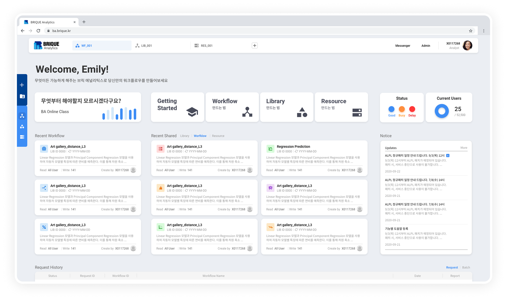
I designed BRIQUE Analytics, a workflow-based data platform used by enterprise clients including Samsung and SK hynix. It enables data analysts to visually build complex data workflows without coding, monitor execution status and errors, and manage the entire process independently.
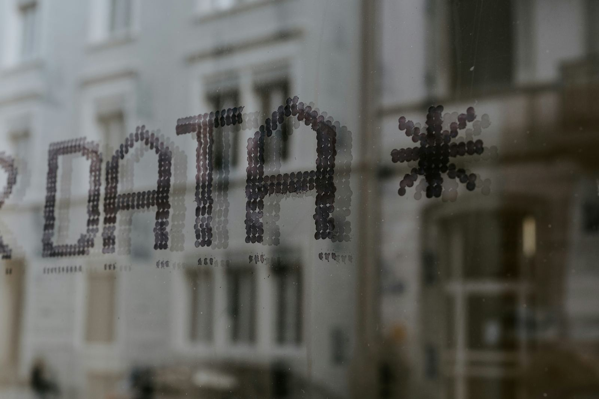
Complex data workflows shouldn't require complex code.
As data workflows became more complex, analysts had difficulty configuring each step, understanding how data moved through the process, and identifying where problems occurred.
The goal: make pipeline logic visual and inspectable. Building should feel like sketching, not scripting.
I spent time with analysts to understand how they moved from raw data to a finished report, and where that process broke down.
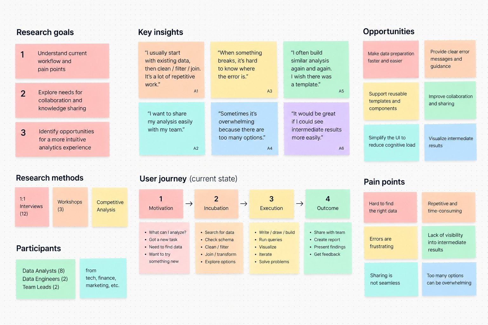
They described pipelines as a sequence of transformations — filter, then join, then aggregate.
Setup was rarely the problem; finding where a pipeline broke was.
Teams kept rebuilding steps from scratch with no way to find existing work.
Research findings were translated into three assumptions that guided our design decisions before moving into interface exploration.
Connected nodes instead of code, so analysts can build without engineering support.
Debugging becomes direct inspection instead of guesswork.
Saved logic instead of rebuilt logic.
Rather than exposing pipeline logic as code, the platform was designed around a visual workflow canvas — making construction, inspection, and reuse all part of the same continuous experience.
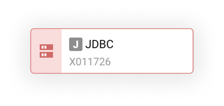
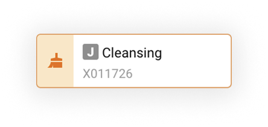
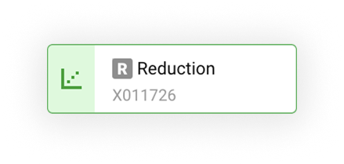
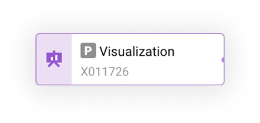
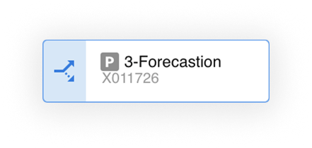
Analysts connect steps on a canvas — filter, join, aggregate — and inspect any node's data at any point.
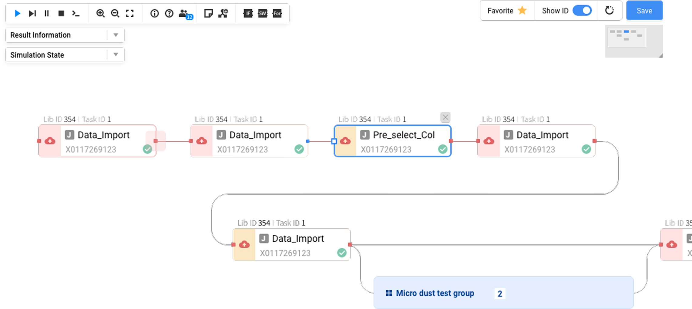
Common steps live in a shared library with auto-suggestion, so teams stop rebuilding logic that already exists.
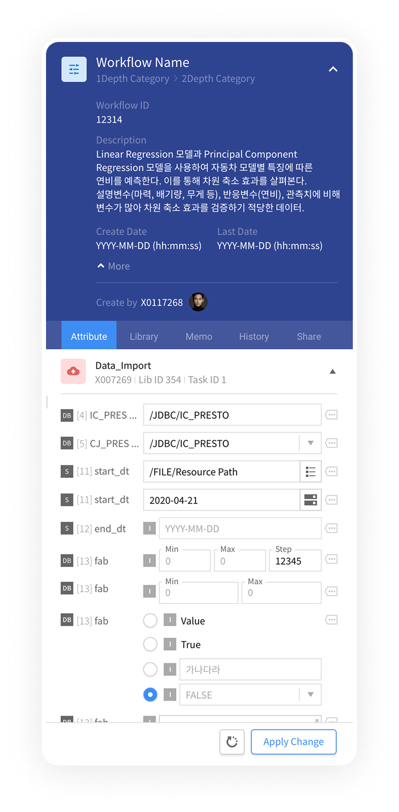
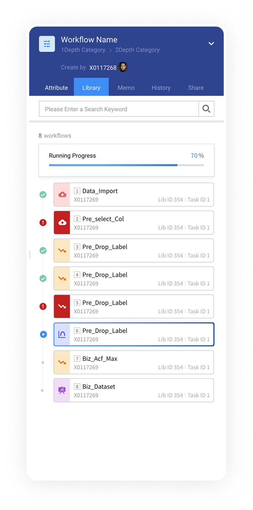
By moving pipeline construction out of engineering's queue and into analysts' hands, the platform shortened the distance between having a data question and getting an answer, cutting down on both request backlogs and debugging time.
The platform could have exposed every possible transformation from day one. What actually earned analysts' trust was letting them see, at every step, exactly what the pipeline was doing — before it did anything clever.